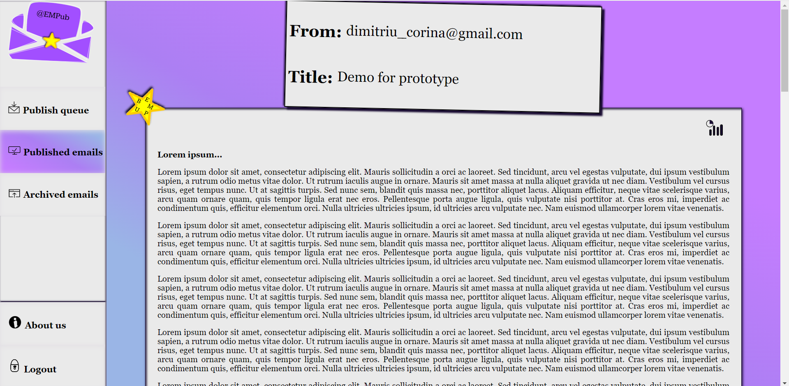

Documentație de tip cerințe software pentru aplicația web EMPub
Cuprins
1. Introducere
1.1 Scop
Prezentul document se adresează utilizatorilor și evaluatorilor proiectului EMPub (Email Publisher), versiunea 1.0, dezvoltat sub coordonarea profesorului titluar de seminar Ciprian Amariei, ca aplicație web care permite unui utilizator să publice un email primit, controlând totdată parametri precum confidențialitea (email‑urile putând fi protejate prin parole) și durata publicării (pe parcursul căreia cei cărora le‑a fost împărtășit link‑ul către pagina email‑ului publicat îl pot vizualiza). Utilizatorul aplicației descrise în cele ce urmează are, de asemenea, posibilitatea de a salva email‑urile publicate de către alți utilizatori, la care are acces, într‑o colecție special concepută în acest scop. Nu în ultimul rând, pot fi vizualizate și analizate statistici asupra numărului de vizualizări ale unui email, publicat de utilizatorul în cauză, de‑a lungul unei perioade de timp (o zi, o săptămână, o lună, un an) și a țărilor de origine ale vizitatorilor din această perioadă. Prezentul document își propune elaborarea acestor facilități principale, prin acoperirea principalelor caracteristici de proiectare și implementare.
1.2 Convențiile documentului
Prezentul document cuprinde cinci secțiuni principale (Introducere — prezenta secțiune, Descriere generală, Cerințe externe pentru interfață, Caracteristicile sistemului, Alte cerințe nonfuncționale), divizate în subsecțiuni ce conduc analiza cerințelor software de la perspectiva de ansamblu a structurii și design‑ului produsului la perspective detaliate ale facilităților furnizate de aplicație, și o secțiune adițională (Alte cerințe) ce are menirea de a sintetiza perspective viitoare asupra produsului creat. Prioritatea cerințelor se consideră a fi moștenită de la specificațiile generale la detaliile de implementare care privesc reprezentarea lor sub formă de cod și/sau diagrame (neexistând o ordine de prioritate pentru cea de‑a doua categorie la nivelul echipei de dezvoltare).
1.3 Publicul țintă și sugestii de parcurgere a documentului
Documentul, asemenea proiectului pe care îl descrie, este construit în scop didactic, motiv pentru care publicul țintă îl constituie personalul academic al Facultății de Informatică din cadrul Universității Alexandru Ioan Cuza Iași, cu precădere profesorii titluari de curs și seminar ai disciplinei Tehnologii Web. Se recomandă parcurgerea secțiunilor din prezentul document în ordinea în care au fost numerotate și introduse în logica discursului, pentru concretizarea înțelegerii conceptelor elaborate. Menționăm încă de la început că prezentul document poate suferi modificări de‑a lungul procesului de implementare a aplicației descrise.
1.4 Scopul produsului
Aplicația web EMPub își propune să rezolve o problemă pe care utilizatorii serviciilor de email o întâmpină atunci când doresc să transmită, prin forward, același mesaj (e.g. de tip newsletter) către un cerc mai larg de persoane, anume introducerea manuală a unei liste de adrese de email (pe care le au la îndemână în prealabil sau pe care trebuie să le ceară persoanelor respective). Publicarea email‑ului, mai facilă din acest punct de vedere, are pentru utilizator același efect, de împărtășire a unui email primit către un grup‑țintă, relativ numeros, de persoane, prin intermediul unui link către pagina web dedicată.
Printre beneficiile produsului în curs de dezvoltare se numără sporirea performanței academice, facilitată prin însușirea de noi cunoștințe aferente domeniilor de studiu din aria tehnologiilor web, precum și rafinarea cunoștințelor vizând realizarea unui produs complet, prin integrarea componentelor din zona front‑end cu cele din zona back‑end. Pentru finalizarea cu succes a aplicației software, sunt necesare abilități de colaborare și lucru în echipă, independență în cercetare și eficiență a efortului depus, relativ la timpul pe care întreaga echipă îl are la dispoziție. Punerea în aplicare a cunoștințelor teoretice privind etapele dezvoltării unui produs (studiate la disciplina Ingineria programării) și studiul implementărilor de bază (cod HTML, CSS) ale instrumentelor de lucru moderne (cum sunt framework‑urile), ce preced, în schema fluxului de învățare, utilizarea efectivă a acestora din urmă, joacă, de asemenea, rolul de avantaje colaterale ale dezvoltării proiectului.
1.5 Referințe
- Viziunea inițială asupra structurii generale și design-ului aplicației, realizată de echipa de dezvoltare, modificată ultima oară în data de
- [1]Metodologia de găzduire Raspbian (comunitate), The Raspberry Pi Foundation, accesată ultima oară în data de
- Exemplu de autentificare folosind exclusiv adresa de email și coduri de verificare, Buildspace ‑ network of web3 developers, accesată ultima oară în data de
2. Descriere generală
2.1 Perspectiva produsului
Această aplicație web a fost dezvoltată la cererea domnului profesor Sabin Corneliu Buraga, și a fost aleasă în scop didactic dintre un număr de propuneri de aplicații web care au fost deja perfecționate sub alte forme în industria web.
Dintr-o perspectivă de ansamblu, aplicația are 3 componente: o aplicație web care servește clientului informațiile relevante dintr-o bază de date, baza de date propriu-zisă, și o suită de script-uri care gestionează contul de email aferent acestei aplicații.

2.2 Funcțiile produsului
- La nivel global, aplicația îi permite oricărui utilizator să se autentifice și să creeze, în propriul nume, postări de tip blog cu structură de email. Pentru aceasta, se începe cu trimiterea unui email (cu titlul și conținutul postării) către o adresă de email controlată de robotul de email anterior menționat.
- Eamil-urile trimise la adresa menționată mai sus, dar încă nepublicate, vor fi listate în secțiunea/pagina intitulată Publish queue (ce poate fi selectată din meniul de navigare).
- Pentru a finaliza procesul de publicare a unui email, utilizatorul se autentifică în aplicație și selectează email‑ul din secțiunea Publish queue.
- Pentru autentificare, pe lângă o adresă de email validă, îi este cerut utilizatorului un cod de verificare ce este trimis pe adresa de email introdusă anterior în secțiunea dedicată, precum și țara acestuia de origine.
- Ulterior selectării opțiunii de Publish, utilizatorul va fi redirecționat către un formular de completare a opțiunilor de publicare referitoare la confidențialitate și durată.
- Ulterior submisiei formularului de publicare, utilizatorul va obține link‑ul către postare, în scopul de a-l putea distribui ulterior altor persoane. După copierea acestui link, utilizatorul este redirecționat automat către pagina de email-uri publicate, unde va regăsi și noul email publicat.
- Email‑urile publicate (referite anterior ca "postări") vor fi listate în secțiunea/pagina intitulată Published emails (ce poate fi selectată din meniul de navigare).
- După expirarea perioadei de publicare, email‑urile revin în coada de publicare și sunt disponibile pentru a fi subiectul unei noi postări (identice, în ceea ce privește conținutul, cu cea a cărei valabilitate a expirat).
- Așa cum am sintetizat într-un paragraf anterior, proprietarul unei postări poate modifica (anterior publicării efective) vizibilitatea acesteia prin intermediul unei parole de acces, prin intermediul căreia, doar utilizatorii ce dețin parola postării o pot vedea. Postările, fie că au fost publicate sau nu, pot fi șterse oricând, la alegerea proprietarului. După introducerea corectă a parolei, un token temporar pentru sesiunea respectivă va fi stocat in cookie‑urile browser‑ului clientului.
- Din perspectiva opusă, un utilizator poate vizualiza neautentificat orice postare la care are acces. Cititorii pot filtra postările vizibile în funcție de autorul acestora (prin click pe adresa de email asociată acestuia din antetul unui email care îi aparține).
- Cititorii autentificați au opțiunea de a salva postările favorite în mod privat, în colecția personală, similar cu procedeul de bookmarking.
- Email‑urile astfel salvate de către cititori vor fi listate în secțiunea/pagina intitulată Archived emails, din cadrul contului.
- Utilizatorul poate șterge în orice moment (orice și oricâte) email‑uri din colecția Archived emails.
- Autorul unei postări de tip email poate vizualiza statistici referitoare la numărul de vizualizări ale acesteia și la țările de origine ale vizitatorilor, fie că email-ul este disponibil în momentul de față ca publicație, fie că a fost anterior publicat și acum se află din nou în coada de publicare (caz în care are acces și la data ultimei publicări). Statisticile vizează perioada totală pe parcursul căreia email‑ul a fost vizibil utilizatorilor, începând deci cu prima publicare.
- Utilizatorul se poate deconecta din aplicație în timp ce navighează pe o pagină de listare a colecțiilor de email‑uri sau pe o pagină de afișare a conținutului unui email și a statisticilor aferente (și numai atunci).
2.3 Clasele și caracteristicile utilizatorilor
Principalele două categorii de utilizatori care vor interacționa cu aplicația sunt scriitorii și cititorii. Scriitorii reprezintă utilizatorii care vor publica email‑uri pe site‑ul web, selectându-le din coada de publicare după ce le-au trimis către adresa dedicată, iar cititorii reprezintă utilizatorii care vor vizualiza postările publicate de scriitori.
Scriitorii, în mod evident autentificați în aplicație, au acces la opțiunea de a crea postări (publicații), permanente sau temporare, și de a le proteja cu o parolă, sau de a le șterge în orice moment (eliminând posibilitatea cititorilor de a le mai vizualiza). Postările nefinalizate sunt vizibile doar proprietarului, în coada de publicare, iar postările finalizate sunt vizibile tuturor utilizatorilor care au acces la acestea (prin distribuire de link‑uri).
Cititorii, care pot fi sau nu autentificați, au acces la postările publicate de scriitori (aflându-se în posesia link‑ului aferent), dacă acestea sunt publice, sau dacă cititorul în cauză are acces la parola impusă de scriitor. Cititorii autentificați au posibilitatea de a salva postările preferate în colecția proprie, pentru care există o secțiune dedicată intitulată Archived emails.
2.4 Mediu de operare

Aplicația web va rula în sistemul de operare Raspbian, bazat pe Debian Linux[1], pe un dispozitiv de tip Raspberry Pi. Componentele vor folosi programare în PHP pentru serverul web, un server Oracle SQL pentru baza de date relațională (și limbajul SQL/PLSQL pentru stocarea de date/interogarea acesteia), și Java Runtime Environment pentru mailbot‑ul (back‑end) care gestionează email‑urile primite. Pentru a asigura un mediu steril, poate fi decisă de către echipa de dezvoltare la un moment ulterior folosirea containerelor Docker pentru a opera individual componentele aplicației.
2.5 Constrângeri de design și implementare
Dată fiind concentrarea cursului pe studiul tehnologiilor web clasice, proiectul utilizează limbajele PHP, SQL/PLSQL Și Java, pentru partea de back‑end și integrarea între front‑end și back‑end, și limbajele HTML(markup language), CSS(stylesheet language) și Javascript, pentru partea de front‑end).
În ceea ce privește constrângerile de design, acesta este intuitiv, pentru a transmite clar utilizatorilor modul de folosire a aplicației, fără a fi necesar un studiu îndelungat sau riguros al manualului dedicat. De asemenea, design‑ul aplicației îndeplinește proprietatea de a fi Web responsive, principala diferență din perspectivă vizuală apărând la nivelul meniului de navigare, care pe dispozitive cu rezoluție mai mică va fi afișat în întregime doar prin click pe pictograma, sub formă de mesaj, aflată în colțul din stânga sus al ecranului. Desing-ul este construit și testat pentru a fi compatibil cu o varietate de browsere (Google Chrome, Microsoft Edge, Opera, Firefox, Google Chrome for Android, Firefox Mobile).
Mai mult decât atât, se asigură compatibilitatea cu protocoalele de comunicare POP3 și IMAP pentru email, în scopul preluării, de către mailbot‑ul implementat, a email-urilor de pe adresa controlată de aplicație. Modelul de mentenanță revine exclusiv dezvoltatorilor proiectului și va fi concretizat la o dată ulterioară lansării prototipului (sau, mai târziu, a MVP‑ului).
2.6 Documentația pentru utilizator
Date fiind scopul și contextul academic al acestui proiect, menționate anterior, acest document servește drept documentație menită utilizatorului.
2.7 Presupuneri și dependențe
În realizarea proiectului, se simulează o apropiere cât mai fidelă de scenariul real al creării unei aplicații web pentru publicarea de email-uri, ce rezolvă problema, identificată într-o varietate de grupuri sociale, a redirecționării de email-uri către un public numeros. Prin urmare, funcționarea aplicației depinde de controlul asupra contului menționat la începutul prezentului document, empub@gmail.com, prin integrare cu platforma Gmail folosindu-ne de Javamail API.
3. Cerințe externe pentru interfață
3.1 Interfețe de utilizator
Pentru a avea acces la funcționalitățile puse la dispoziție de aplicația web EMPub este necasară autentificarea ce constă în 3 pași simpli:
- introducerea adresei de email în câmpul localizat pe prima pagină și apăsarea butonului Continue
- introducerea codului de verificare în câmpul localizat pe a doua pagină, cod primit pe adresa de email specificată pe pagina anterioară, și apăsarea butonului Continue
- alegerea țării de reședință din lista oferită pe a treia pagină și apăsarea butonului Continue.
Atunci când utilizatorul se află cu mouse-ul pe steluța din mijlocul logo-ului, aceasta se va mări și va apărea în ea numele aplicației web.
De asemenea, pe prima pagină se află butonul reprezentat de pictograma  ce redirecționează utilizatorul pe pagina cu documentația aferentă aplicației EMPub.
ce redirecționează utilizatorul pe pagina cu documentația aferentă aplicației EMPub.
După autentificare, utilizatorul este redirecționat pe pagina Publish queue.
Aplicația EMPub pune la dispoziție trei pagini principale:
- Publish queue
- Published emails
- Archived emails.
Pe pagina Publish queue se găsesc email-urile pe care utilizatorul le-a trimis la adresa controlată de aplicația web. Pentru fiecare email din această pagină există 3 opțiuni:
- vizualizarea conținutului email-ului
- publicarea email-ului prin apăsarea butonului reprezentat de pictograma
- ștergerea email-ului prin apăsarea butonului reprezentat de pictograma
Pe pagina Published emails se găsesc email-urile pe care utilizatorul le-a publicat și a căror durată de publicare nu a expirat la momentul accesării acestei pagini. Pentru fiecare email din această pagină există 3 opțiuni:
- vizualizarea conținutului email-ului
- vizualizarea statisticilor aferente cu privire la numărul de vizualizări și la țara de origine a celor care au vizualizat email-ul, prin apăsarea butonului reprezentat de pictograma .
- ștergerea email-ului prin apăsarea butonului reprezentat de pictograma
Pe pagina Archived emails se găsesc email-urile publicate de alți utilizatori la care utilizatorul în cauză are acces. Pentru fiecare email din această pagină există 2 opțiuni:
- vizualizarea conținutului email-ului
- ștergerea email-ului prin apăsarea butonului reprezentat de pictograma
Utilizatorii au acces la meniul din stânga pe tot parcursul folosirii aplicației, meniu ce oferă o serie de butoane cu anumite funcționalități:
- butonul Publish queue → redirecționează utilizatorul pe pagina Publish queue
- butonul Published emails → redirecționează utilizatorul pe pagina Published emails
- butonul Archived emails → redirecționează utilizatorul pe pagina Archived emails
- butonul About → redirecționează utilizatorul pe pagina cu documentația aplicației
- butonul Logout → deconectează utilizatorul din aplicația web și îl redirecționează în pagina de autentificare.
Dacă utilizatorul dorește să vizualizeze conținutul unui email, el trebuie să apese pe email-ul corespunzător și va fi redirecționat către pagina ce îl conține. Dacă email-ul îi aparține, va fi posibil să vizualizeze și statisticile aferente publicării acestuia.
Dacă utilizatorul dorește să vizualizeze statisticile unui email, o poate face atât din pagina Published emails, cât și din pagina în care este afișat conținutul email-ului, apăsând butonul reprezentat de pictograma ce îl va redirecționa către pagina asociată conținutului email-ului, în partea de după acesta.
Utlizatorul poate vedea statisticile vizând numărul de vizualizări sau țara de origine a vizitatorilor.
Dacă utilizatorul dorește să publice un email și apasă butonul reprezentat de pictograma , el va fi redirecționat către o pagină unde va trebui să seteze proprietățile pentru această acțiune. Setările implicite sunt postare publică și fără durată de expirare, însă odată ce utilizatorul bifează opțiunile Yes, pentru oricare dintre cele 2 proprietăți vor apărea câmpuri aparte în care va putea introduce propriile valori. Butonul Publish îl va redirecționa pe utilizator pe pagina în care poate copia link-ul aferent publicării email-ului.
Aplicația web EMPub este compatibilă cu o serie de dispozitive (telefon mobil, tabletă, laptop) la diferite rezoluții, dar și cu diferite browsere(Chrome, Opera, Microsoft Edge etc.).

3.2 Interfețe hardware
Partea de front‑end a aplicației a fost concepută pentru a fi compatibilă cu toate dispozitivele principale de comunicare moderne (telefoane, calculatoare, tablete). Datorită funcționalității de bază nu foarte complexe a aplicației, estimăm că pagina este necostisitoare din punct de vedere al cerințelor tehnice.
Partea de back‑end va rula pe un server de capacitate redusă, întrucât funcțiile de back‑end sunt de asemenea relativ reduse din punct de vedere al complexității. Într‑un mediu de producție, această decizie este economică pentru întreținerea aplicației. Protocolul de comunicare client‑server și server‑server (pentru comunicare internă între componente) va fi TCP.
3.3 Interfețe software
Acest produs interacționează cu mai multe alte elemente software care nu fac parte din acesta. Printre acestea se numără programul de browser al clientului și biblioteci Javascript disponibile prin licență liberă. De asemenea, programul interacționează cu servicii de email deja existente, pentru a facilita îndeplinirea rolului robotului de email (a putea prelua, în speță, titlurile și conținuturile email-urilor trimise către adresa controlată de aplicație). Până acum am identificat următoarele elemente concrete:
- Biblioteca Javamail, pentru gestiunea informațiilor asociate unui cont de email în cadrul platformei de programare Java;
- Bibliotecile standard PHP;
- Biblioteca Javascript Chart.js, disponibilă prin licență liberă.
Serviciile necesare includ o gazdă web, disponibilă fie în formă virtuală, fie în formă fizică, și un furnizor de nume de domeniu. Într-un mediu de producție, este nevoie și de un emițător de certificat SSL pentru a folosi tehnologia HTTPS.
Comunicarea între baza de date și partea de back‑end a aplicației (prin limbajele PHP și Java) vizează în principal următoarele acțiuni:
- stocarea temporară a codurilor de verificare pentru autentificare (până la deconectare sau până la expirarea acestora în caz de neutilizare la timp);
- stocarea adreselor de email corespunzătoare conturilor utilizatorilor, care se actualizează la crearea de noi conturi;
- stocarea, pentru fiecare utilizator, a titlurilor și conținuturilor email‑urilor din cele 3 colecții aflate la îndemâna sa, care se actualizează la publicarea, adăugarea în colecție sau ștergerea unui email;
- stocarea setărilor de stare asociate unui email (publicat/nepublicat, public/privat, parolat/neparolat, disponibil pe perioadă de timp nedefinită/cu durată de timp predefinită), care se actualizează la trimiterea unui email către empub@gmail.com, la publicarea unui email sau la ștergerea unui email publicat;
- stocarea numărului de vizitatori și a țărilor acestora de origine, care se actualizează la fiecare vizită efectuată asupra unui email publicat;
- interogarea bazei de date în vederea obținerii de informații în funcție de datele stocate mai sus (de exemplu, despre existența unui anumit cont).
În privința detaliilor mai concrete de implementare (mai ales pe partea de back‑end) a proiectului, acestea urmează a fi stabilite.
3.4 Interfețe de comunicare
Standardul de comunicare principal client‑server este HTTP. Pentru comunicarea dintre componentele server‑ului, vor fi folosite cereri (request‑uri) directe, specifice aplicațiilor folosite, spre exemplu request‑uri SQL pentru Oracle Express.
Pentru securitatea datelor utilizatorului este necesar protocoulul HTTPS, însă datorită costului și a contextului academic al acestui produs, acesta va fi omis. În absența HTTPS, datele vor fi transmise în clar, însă date critice precum credențialele pot fi criptate individual (printr-un sistem simplu, dar care nu a fost încă stabilit) înainte de transmitere.
4. Caracteristicile sistemului
4.1 Autentificarea
4.1.1 Descriere și prioritate
Pentru a avea acces la funcționalitățile oferite de aplicația web EMPub, orice utilizator trebuie să fie capabil să se autentifice în aplicație prin intermediul unei adrese de email într-un mod simplu și rapid, dar și sigur pentru a beneficia cât mai curând de serviciile puse la dispoziție acestuia.
Acestă caracteristică a sistemului are prioritate ridicată întrucât este necesar ca fiecare utilizator să aibă un cont unic asociat adresei de email furnizate la autentificare pentru a putea realiza diferite operații asupra email-urilor asociate cu acel cont.
4.1.2 Secvențe de stimul/răspuns
Pentru a se autentifica, un utilizator trebuie să țină cont de următoarea secvență de pași:
- introduce o adresă validă de email cu care dorește să se autentifice și de pe care a trimis sau intenționează să trimită email‑uri ce se doresc a fi publicate (sau pur și simplu o adresă de email validă în cazul în care dorește doar să adauge la colecție publicația unui alt utilizator)
- apasă butonul Continue ce îl va redirecționa către pagina care cere introducerea unui cod de verificare
- introduce codul de verificare primit pe adresa de email furnizată la pasul anterior
- apasă butonul Continue ce îl va redirecționa către pagina care cere selectarea țării de origine/reședință
- selectează țara de origine/reședință din lista oferită
- apasă buonul Continue ce îl va redirecționa către pagina Publish queue
O metodă alternativă luată în considerare pentru obținerea țării de origine a utilizatorului este deducerea acesteia din adresa IP, folosind un API extern.
Dacă email‑ul furnizat nu este valid și/sau dacă codul de verificare introdus nu corespunde cu cel primit pe adresa de email furnizată, utilizatorul va fi notificat în acest sens în momentul în care apasă butonul Continue și nu va fi redirecționat către următoarea pagină până când nu introduce datele corecte corespunzătoare.
Un cont de utilizator se creează automat în două scenarii: fie la primul email trimis de pe o anumită adresă personală către adresa controlată de aplicație (și menționată mai sus), fie la prima autentificare cu adresa personală.
4.1.3 Cerințe funcționale
Pentru ca un utilizator să se poată autentifica, el trebuie să folosească o adresă validă și la care are acces, pentru a putea folosi în continuare codul de verificare trimis la acea adresă.
Pentru ca un utilizator să se poată autentifica, el trebuie să introducă exact (cifră cu cifră) codul de verificare de 6 cifre trimis pe adresa de email furnizată.
4.2 Publicarea email-urilor
4.2.1 Descriere și Prioritate
Aplicația web permite utilizatorilor să publice anumite email-uri pe care aceștia le trimit către adresa controlată de aplicație, într-un mod simplu și rapid oricâtor persoane își doresc. La publicarea unui email utilizatorul decide și setează anumite proprietăți pentru acesta:
- email-ul va fi public su privat
- email-ul va avea sau nu o durată de timp, aleasă de utiliztor, pe parcursul căreia va fi publicat
- email-ul va avea o anumită parolă dacă acesta este privat.
Acestă caracteristică a sistemului are prioritate ridicată întrucât publicarea email-urilor este principalul scop al aplicației.
4.2.2 Secvențe de stimul/răspuns
Un utilizator poate publica un email ținând cont de următoarea secvență de pași:
- trimiterea email-ului pe care dorește să îl publice cu ajutorul aplicației web EMPub la adresa empub@gmail.com controlată de aceasta
- autentificarea în aplicație cu adresa de pe care s-a trimis email-ul ce se dorește a fi publicat
- accesarea paginii Publish queue unde se va regăsi email-ul trimis la adresa controlată de aplicație
- apăsarea butonului ce va redirecționa utilizatorul către o pagină pentru setarea proprietăților email-ului ce se dorește a fi publicat
- setarea proprietăților email-ului ce se dorește a fi publicat → securitate, durata în ore, minute și secunde (doar dacă se selectează opțiunea Yes pentru durată) și parola (doar dacă se selectează opțiunea Private pentru securitate)
- apăsarea butonului Publish ce va redirecționa utilizatorul către pagina cu link-ul furnizat pentru accesarea email-ului publicat
- apăsarea butonului Copy link ce va copia link-ul furnizat și va redirecționa utilizatorul în pagina Published emails.
După ce utilizatorul publică un email, acesta va fi mutat în pagina Published emails, iar după ce durata de publicare expiră va fi mutat înapoi în pagina Publish queue. În acest fel un același email nu poate fi publicat încă o dată în perioada în care este deja accesibil ca publicație.
În cazul în care un utilizator se răzgândește și nu mai dorește să publice email‑ul selectat, în pagina în care se setează proprietățile pentru publicarea acestuia există butonul Quit care va anula acțiunea și va redirecționa utilizatorul în pagina Publish queue.
4.2.3 Cerințe funcționale
Pentru ca un utilizator să poată publica un email, el trebuie să fie autentificat în aplicație.
Pentru ca un utilizator să poată publica un email, email‑ul respectiv va trebui să existe în pagina Publish queue, adică să fie trimis de la adresa cu care utilizatorul s‑a autentificat în aplicație la adresa controlată de aplicație.
Pentru ca un email să fie publicat cu succes, este nevoie ca o durată să fie precizată în cazul în care se dorește ca email‑ul publicat să expire după un anumit timp și ca o parolă să fie furnizată în cazul în care se dorește ca email‑ul publicat să fie privat. Fără aceste informații, utilizatorul va primi mesaje de notificare intuitive cu privire la lipsa duratei și/sau parolei atunci când apasă butonul Publish.
4.3 Vizualizarea conținutului unui email
4.3.1 Descriere și Prioritate
Orice utilizator poate vizualiza conținutul unui email din oricare cele trei liste puse la dispoziție în paginile aplicației.
Această caracteristică a sistemului are proprietate ridicată întrucât, dacă un utilizator nu își mai aduce aminte exact conținutul email-ului pe care dorește să îl publice sau al unui email deja publicat, el trebuie să fie capabil să îl revadă, dar și deoarece orice utilizator trebuie să aibă posibilitatea de a vizualiza email-urile la care a primit acces și pe care le are la dispoziție în pagina Archived emails.
4.3.2 Secvențe de stimul/răspuns
Un utilizator poate vizualiza conținutul unui email apăsând pe email-ul (pe titlu sau pe începutul conținutului acestuia) al cărui conținut dorește să îl vadă în întregime, din oricare dintre cele trei liste puse la dispoziție în paginile aplicației. El va fi apoi redirecționat către o pagină care va afișa titlul, expeditorul și conținutul acestuia.
În cazul în care email-ul îi aparține și este sau a mai fost publicat, după conținutul email-ului va putea vizualiza și statisticile acestuia și link-ul aferent publicării.
4.3.3 Cerințe funcționale
Un utilizator poate vizualiza link‑ul de publicare (în cadranul Last published) și statisticile email‑ului respectiv aflate pe aceeași pagină cu conținutul doar dacă email-ul îi aparține și este sau a mai fost publicat.
4.4 Vizualizarea statisticilor
4.4.1 Descriere și Prioritate
Orice utilizator are posibilitatea de a vedea statisticile aferente unui email publicat ales de acesta din aplicație, și anume numărul de vizualizări și țara respectivilor oameni care au vizualizat email-ul. Utilizatorul poate aplica anumite filtre asupra graficelor puse la dispoziție (oră, zi, lună etc.).
Acestă caracteristică a sistemului are propritate medie întrucât scopul principal al aplicației este publicarea email-urilor pentru a putea fi vizualizate de un anumit grup de oameni, iar studierea statisticilor publicării acestora este un bonus.
4.4.2 Secvențe de stimul/răspuns
Un utilizator poate vedea statisticile unui email publicat alegând unul din pagina Published emails și apăsând butonul reprezentat de pictograma ce îl va redirecționa pe pagina pe care acestea se află. Acolo utilizatorul poate alege dacă dorește să vadă numărul de vizualizări pe ore, zile, luni sau ani.
4.4.3 Cerințe funcționale
Un utilizator poate vizualiza statistici doar pentru email-urile publicate de acesta, așa că opțiunea de vizualizare a statisticilor nu este oferită pentru email-urile care nu sunt publicate sau care nu aparțin utilizatorului (i s-a oferit acces la ele).
4.5 Ștergerea email-urilor
4.5.1 Descriere și prioritate
Un utilizator poate șterge email-uri din oricare listă din paginile Publish queue, Published emails și Archived emails.
Acestă caracteristică a sistemului are proprietate scăzută.
4.5.2 Secvențe de stimul/răspuns
Un utilizator poate șterge un email din oricare dintre cele trei liste de email-uri puse la dispoziție în paginile aplicației, apăsând butonul reprezentat de pictograma . În acel moment se va deschide o fereastră prin care utilizatorul este întrebat dacă este sigur că dorește să șteargă email-ul selectat. Dacă selectează opțiunea Yes atunci email-ul va fi șters definitiv din aplicație și nu va mai fi accesibil celor care au primit link către acesta, iar dacă selectează opțiunea No atunci email-ul nu va fi șters și fereastra se va închide.
4.5.3 Cerințe funcționale
Un utilizator care șterge un email din pagina Publish queue nu va mai avea acces la el.
Un utilizator care șterge un email din pagina Published emails nu va mai avea acces la el și va face ca toți utilizatorii care au primit acces la email să piardă acest privilegiu.
Un utilizator care șterge un email din pagina Archived emails nu va mai avea acces la el, însă nu va face ca ceilalți utilizatori care au primit acces la email să piardă acest privilegiu.
5. Alte cerințe nonfuncționale
5.1 Cerințe de performanță
Oricine deține un dispozitiv cu acces la internet și care are o adresă de email validă (de pe care se pot trimite email-uri către o adresă de Gmail), poate beneficia de serviciile oferite de aplicația EMPub. În ceea ce privește dezvoltarea aplicației, se va ține cont de actualizarea în timp real a statisticilor corespunzătoare unui email publicat, la intervale scurte de timp (circa 5 minute).
5.2 Cerințe de siguranță
Aplicația asigură utilizatorul că email‑urile publicate vor fi asociate doar contului corespunzător adresei de email furnizate de utilizator la momentul autentificării, în secțiunea dedicată email‑urilor publicate (Published emails). Distribuirea acestora către alte persoane/conturi revine doar utilizatorului "publicist", care își asumă în întregime răspunderea pentru aria de vizibilitate a email‑ului său din momentul publicării.
De asemenea, aplicația asigură păstrarea integră a email‑urilor publicate, în curs de publicare (adică aflate în coada de publicare) sau salvate de utilizator în colecția sa, de‑a lungul timpului, fără pierderi de conținut ale acestora, în absența ștergerii lor de către utilizator.
5.3 Cerințe de securitate
La momentul încercării autetificării cu o anumită adresă de email, utilizatorul va primi pe adresa de email furnizată un cod de verificare unic pentru acel interval de timp (se va stabili un interval de timp de circa 15 minute de valabilitate a codurilor de verificare), pe care doar el îl va putea folosi pentru a intra în aplicație. Cum adresele de email sunt unice, nimeni altcineva nu îi va putea accesa contul din aplicație, și deci nimeni altcineva nu va avea acces la email‑urile asociate contului său și la informațiile pe care acestea le conțin.
În ceea ce privește trimiterea unui email către contul asociat aplicației (empub@gmail.com), aplicația asigură că acesta nu va fi distribuit către nici o altă adresă de email și va fi folosit doar în scopul intern al publicării acestuia de către utilizator, la cererea acestuia prin selectare din coada de publicare.
5.4 Atribute de calitate software
- Disponibilitate
- Aplicația este disponibilă pe tot parcursul unei zile, adresându-se utilizatorului obișnuit al serviciilor de email.
- Interoperabilitate
- Aplicația mediază transferul de informații (în cazul de față, conținuturi de email‑uri) între diferite dispozitive.
- Mentenanță
- Echipa de dezvoltare a aplicației este deschisă potențialelor ajustări care deservesc unei experiențe mai plăcute din partea utilizatorului.
- Portabilitate
- Aplicația este disponibilă atât pe calculatoare de tip desktop și laptop‑uri, cât și pe telefoane mobile și tablete, întrucât design-ul este Web responsive.
- Fiabilitate
- Aplicația ține cont de rigorile de confidențialitate a datelor utilizatorilor.
- Reutilizare
- Aplicația are potențialul de a fi implementată pe piață ca soluție reală la problema redirecționării email-urilor, prin urmare proiectul poate fi continuat în afara ariei didactice care constituie scopul său de bază.
5.5 Regulile afacerii
- Fiecărei adrese de email îi este asociat un cont unic în aplicație.
- Email-urile utilizatorilor nu sunt redirecționate, conform politicii de securitate de mai sus, către alți oameni sau făcute publice în vreun fel fără acordul explicit al acestora prin cereri de publicare și distribuire a link-ului de către aceștia în mod exclusiv.
- Utilizatorul poate salva în colecția personală orice email distribuit către el de către orice alt utilizator.
- Utilizatorul are dreptul să retragă oricând un email publicat anterior de el însuși (prin ștergere), moment în care link‑ul distribuit altor utilizatori devine invalid chiar dacă perioada de publicare specificată inițial nu s‑a încheiat.
- Utilizatorul poate publica email‑uri doar prin selectarea acestora din coada de publicare (click pe pictograma aferentă).
- Utilizatorul nu poate vedea statisticile email‑urilor publicate de către alți utilizatori.
- Utilizatorul poate seta perioada de publicare a unui email (la nivel de ore, minute și secunde).
- Utilizatorul poate vedea atât statistici ale email‑urilor care sunt publicate (fără ca intervalul de timp al publicării să fi expirat), cât și statistici ale email‑urilor care au mai fost publicate și au trecut ulterior înapoi în coada de publicare.
- Utilizatorul poate adăuga parole (pentru un nivel de securitate mai ridicat) la email‑urile pe care dorește să le publice.
- Utilizatorul se poate autentifica oricând în aplicație, fără a fi necesară o perioadă de timp față de ultima autentificare, cu precizarea că la fiecare autentificare va primi un nou cod de verificare pe email‑ul furnizat.
- Documentația este publică pentru orice vizitator al website-ului EMPub.
- Utilizatorii dețin simultan toate cele trei colecții de email‑uri (care pot conține sau nu publicații): Publish Queue, Published Emails, Archived Emails.
6. Alte cerințe
6.1 Perspectiva reutilizării produsului
Se intenționează reutilizarea aplicației, din punct de vedere al arhitecturii și implementării back‑end, la disciplinele Programare Avansată și Practica SGBD, întrucât tehnologiile de lucru alese se află în deplină concordanță cu obiectul de studiu al disciplinelor menționate.
Note de subsol
- Coordonator; designerul paginilor de listare a email‑urilor (publicate, arhivate, aflate în coada de publicare) și al paginilor de afișare a tipurilor de email‑uri de mai sus, însoțite de statistici; designer-ul interacțiunilor dintre pagini și din aplicație; redactor al documentației pentru secțiunea introductivă (1) și secțiunile 2, 5 și 6; editor al documentației pentru toate secțiunile în ceea ce privește conținutul și formatarea.
- Designerul paginilor de autentificare (index, pagina introducerii codului de verificare și pagina introducerii țării de origine) și al paginilor de publicare (setări de publicare) și distribuire a unui email; redactor al documentației pentru secțiunile 3, 4 și 5; editor al documentației pentru adăugarea cuprinsului și aspect general estetic.
- Designerul secțiunii de statistici din paginile de afișare a email‑urilor (vezi folderul de GitHub dedicat) și al unei variante alternative de meniu de navigare în cadrul website-ului; arhitect back‑end; redactor al documentației pentru secțiunile 2, 3 și 4; editor al documentației pentru secțiunile 4 și 5 și formatare Scholarly.